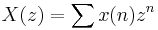
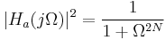

Algorithmus (IIR-Filter)
IIR-Filter (Infinite Impulse Response) sind digitale Filter mit Feedback, wie im folgenden Bild gezeigt.
Digitale Filter werden auch häufig in Form einer Differenzgleichung beschrieben, die das Verhältnis zwischen Ausgabe- und Eingabesignal definiert.
Dann:
wobei , N die vorgekoppelte Filterordnung, bi der vorgekoppelte Filterkoeffizient, M die rückgekoppelte Filterordnung, ai der rückgekoppelte Koeffizient, x(n) das Eingabesignal und y(n) das Ausgabesignal ist. Der Term ist die Rückkopplung.
Darstellung von Digitalfiltern
In Origin gibt es vier Ausgaben für die Darstellung des IIR-Filters.
- Übertragungsfunktion
-
Die Übertragungsfunktion des IIR-Filters wird in der Z-Domäne durch das Verhältnis von zwei Polynomialen des Komplex z - 1 dargestellt. Um die Übertragungsfunktion des IIR-Filters zu suchen, ordnen Sie die obenstehende Gleichung folgendermaßen neu an:
Die Z-Transformation wird dargestellt als:

Nehmen Sie die Z-Transformation von jeder Seite der Filtergleichung. Sie erhalten:
Die Übertragungsfunktion des IIR-Filters in der Z-Domäne stellt Folgendes dar:
- Nullstellen-Pole-Verstärkung
-
Wie bei der obenstehenden Übertragungsfunktion gezeigt, ist der Zähler für die Position der Nullstellen und der Nenner für die Pole bestimmt. Die Übertragungsfunktion kann dann in Form Nullstellen-Pole-Verstärkung neu geschrieben werden.
wobei k die Verstärkung ist, qi und pj die Nullstellen bzw. die Pole der Übertragungsfunktion sind.
- Zustand
-
Die Darstellung von Zustand-Raum für das Filtersystem kann definiert werden als:
x(n + 1) = Ax(n) + Bu(n)
y(n) = Cx(n) + Du(n)
wobei u(n) die Eingabe ist, x(n) der Zustandsvektor, y(n) die Ausgabe, A eine m x m-Matrix, m die Filterordnung, B ein Spaltenvektor, C der Zeilenvektor und D ein Skalar.
- Kaskadierte IIR-Filter - Second Order Section (SOS)
-
Die äquivalente SOS-Darstellung der Übertragungsfunktion des Digitalfilters wird folgendermaßen geschrieben:
wobei g die Verstärkung ist und b0k,b1k,b2k die Zählerkoeffizienten sowie a0k,a1k,a2k die Nennerkoeffizienten sind. Wenn die Filterordnung m gerade ist, L = m / 2, wenn m ungerade ist, L = (L + 1) / 2. SOS kann als folgende L-mal-6-Matrix dargestellt werden.
IIR-Filter entwerfen
Die gängige Vorgehensweise, um einen IIR-Filter zu entwerfen, ist:
- Filterspezifikation festlegen.
- Legen Sie den analogen Filterprototypen des Tiefpasses fest. Die verfügbaren Prototypen, die von Origin unterstützt werden, sind Butterworth, Tschebyscheff Typ I, Tschebyscheff Typ II und Elliptisch.
-
| Methode |
Quadrierte Betragsantwortfunktion |
Übertragungsfunktion von analogen Filtern |
| Butterworth |
 |
|
| Tschebyscheff Typ I |
|
|
| Tschebyscheff Typ II |
|
 |
| Elliptisch |
|
|
In der obenstehenden Tabelle ist die Frequenz, N die Filterordnung, die maximale Oszillation in der Passbandfrequenzantwort, TN die Tschebyscheff-Polynomiale, UN die Jacobische elliptische Funktion, g die Skalar-Verstärkung, s die Ebene der Laplace-Transformation, qk oder qi die Nullstelle und pk oder pj die Pole.
- Frequenztransformation für Analogfilter
-
Transformieren Sie den Tiefpassfilter in einen Hochpass-, Bandpass- oder Bandsperrfilter mit der gewünschten Abschneidefrequenz. In Origin wird die Form Zustand-Raum in der Berechnung der Frequenztransformation verwendet. Nehmen Sie an, dass die ursprüngliche Übertragungsfunktion des Tiefpassfilters H(s') ist und die Übertragungsfunktion nach der Transformation H(s).
- Tiefpass in Tiefpass - Ein analoger Tiefpassfilter mit einer Abschneidefrequenz von 1 rad/s wird in einen Tiefpassfilter mit einer festgelegten Abschneidefrequenz transformiert.
- Tiefpass in Hochpass
- Tiefpass in Bandpass
- Tiefpass in Bandsperre

wobei 0 = sqrt(1 * 2) die Mittenfrequenz ist, B = 2 - 1 die Bandbreite sowie 1 und 2 die untere bzw. oberen Bandkante sind.
- Konvertieren Sie einen Analogfilter in einen Digitalfilter.
-
Um einen Analogfilter in einen Digitalfilter zu konvertieren, verwendet Origin die bilineare Transformation, die durch folgenden Ausdruck definiert ist:
Vorwärts- und Rückwärtsfilterung
Origin lässt die Durchführung von Vorwärts- und Rückwärtsfilterung zu, was zu einer Nullphasenverzerrung führt. Zuallererst wird die Filterung der Daten in Vorwärtsrichtung durchgeführt und dann die gefilterten Daten umgekehrt, um sie rückwärts durch den Filter laufen zu lassen.